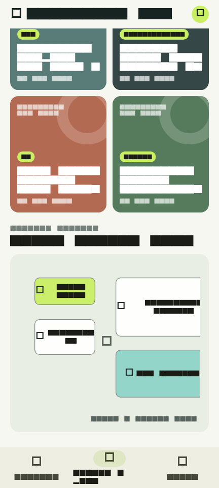
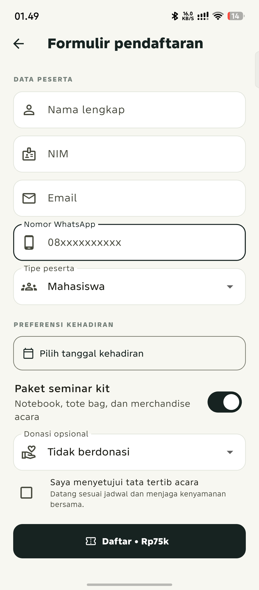
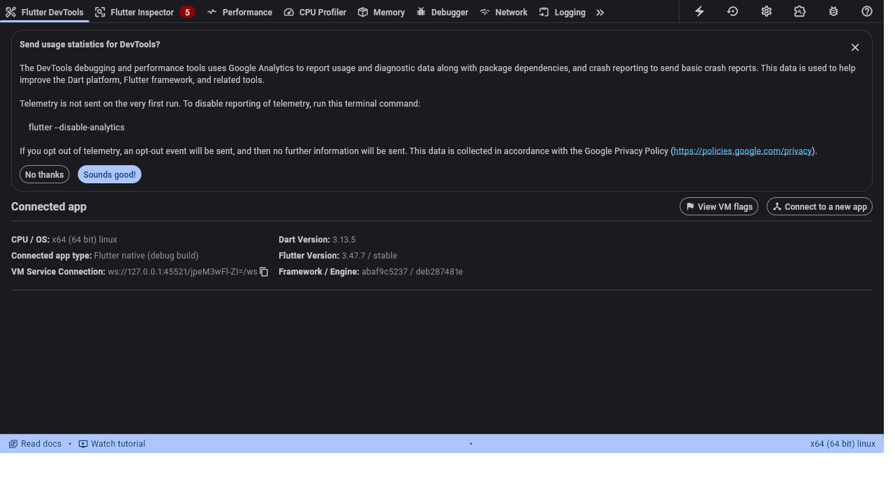

Aplikasi Flutter untuk informasi seminar, galeri venue, dan pendaftaran tiket.
| Nama mahasiswa | Javariaubintang Muharram |
| NIM | 20240040219 |
| Mata kuliah | IF31033 • Tugas Sesi 5 |
| Platform pengujian | Flutter 3.47.7 • Android 16 / Linux desktop |
| Tanggal laporan | 6 November 2026 |
NusaEvent Hub menyajikan rangkaian seminar dan workshop bertema AI, Mobile, IoT, dan Cybersecurity. Pengguna dapat memfilter acara, membaca informasi, melihat poster dan denah venue, mengisi formulir pendaftaran, lalu mengelola tiket aktif.
Aplikasi dibangun dengan Flutter dan Material 3. Data acara berupa data contoh lokal; tiket tersimpan di memori selama aplikasi berjalan dan belum menggunakan backend.
EventItem menyimpan identitas acara, kategori, waktu, lokasi, harga, kapasitas, dan deskripsi. RegistrationTicket menyimpan data peserta serta preferensi pendaftaran dan mengacu ke acara yang dipilih. Daftar awal didefinisikan di lib/data/sample_events.dart.
HomeEventsScreen membangun daftar dengan builder sliver dan EventCard memakai InkWell untuk membuka formulir. Filter kategori dibuka sebagai bottom sheet dan mengubah daftar yang tampil tanpa mengubah data sumber.
EventRegistrationScreen mengelola form dengan GlobalKey<FormState>. Validator memeriksa nama, NIM numerik, format email, dan nomor WhatsApp. Tanggal dipilih lewat showDatePicker(); opsi tipe peserta, seminar kit, donasi, dan persetujuan tata tertib dikelola sebagai state. Saat submit valid, indikator loading muncul, tiket disimpan, lalu aplikasi menampilkan SnackBar.
Poster dibuat melalui GridView.builder. Denah berada di dalam InteractiveViewer agar dapat digeser dan diperbesar. Tiket aktif ditampilkan dalam daftar; Dismissible meminta konfirmasi lewat AlertDialog sebelum tiket dihapus.
NavigationBar Material 3.


flutter analyze: tidak ditemukan masalah.Sumber kode dan screenshot yang tersedia disertakan dalam ZIP tugas. Jalankan flutter pub get, lalu flutter run untuk mencoba aplikasi.